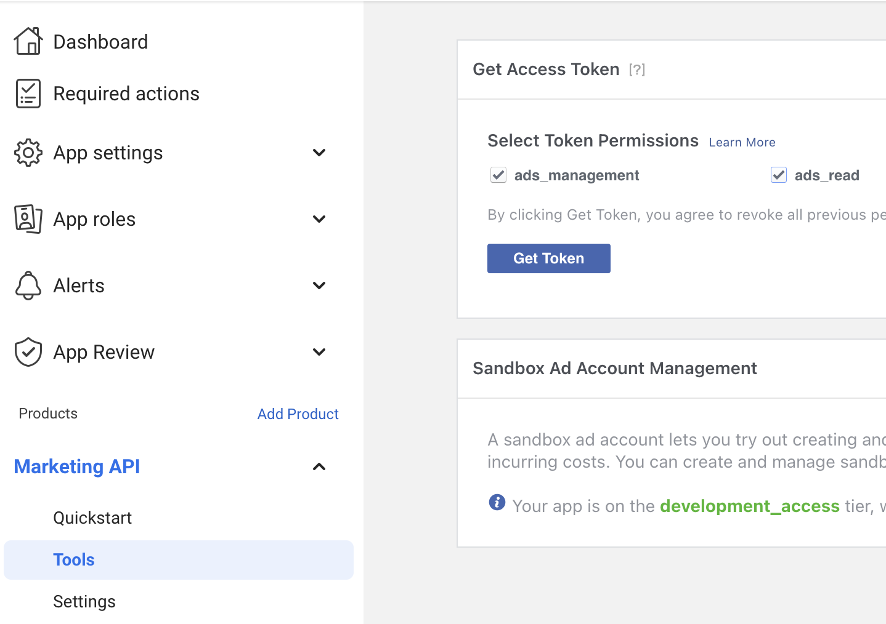
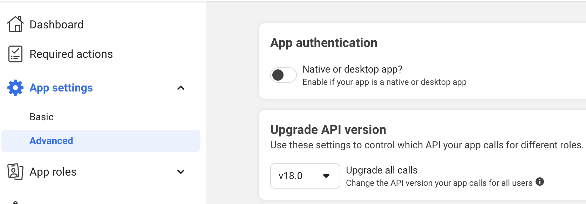
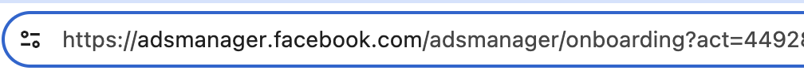

Create Facebook Credentials: Token, Version, & Creation Act
Source:vignettes/create_facebook_credentials.Rmd
create_facebook_credentials.RmdThis page includes instructions to create credentials for using the Facebook Marketing API. To use the API, three things are needed:
- Token
- Version
- Creation Act
Set up app
- Register as Meta Developer
- Go to https://developers.facebook.com/ and click My Apps
- Click Create App (green button)
- Click Other
- Click Business, then Next
- Create a name for the App, then click Create App
- On the Add products to your app page, click Set Up for Marketing API
Get token
- Click Tools, which appears on the left hand side under Marketing API
- Under Select Token Permissions, click the boxes next to ads_management and ads_read
- Click Get Token; the token will appear in gray, and
be a long string starting with something like
EEAKW...

Get version
- Under App Settings, click
Advanced; the version will show on this page—for
example,
"v18.0"

Get creation act
- Go to https://www.facebook.com/business/
- Click Create an ad
- The creation act will appear in the URL: https://adsmanager.facebook.com/adsmanager/onboarding?act=[CREATION ACT NUMBER HERE]&breakdown_regrouping=1
